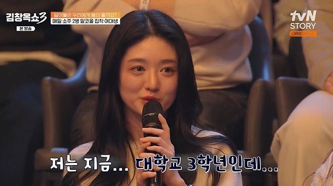
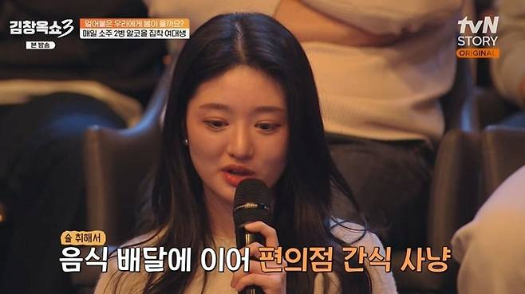

제목 있는 그대로 내용임


제목 있는 그대로 내용임
속버리지 말고 든든한 안주에 술 필요하면 언제든 전화해요
바로 솔루션을..
ㅋㅋㅋㅋㅋ
복학생들이 대쉬하다 놀라겠네 ㅋㅋㅋ
외국분으러 가져와줘
크흠 그으래요
술로 달래는 거야 이해가 되는데
정상판단 못할 정도로 마셔놓고
남이 날 이해해주길 바라는 건 좀 ㅋㅋ
여자들이랑 조금만 진솔한 대화해보면
어렸을때 따돌림, 친구 배신 뭐 이런거 안 겪어본 사람이 없음ㅋㅋㅋ
근데 더 깊이 들어가면 이게 남자가 상상하는게 아닌경우가 태반임
얘기 시켜보면 구체적인 뭔가는 설명이 어려운데 '나만 느껴지는 무언가'있다거나
인사를 하는데 평소랑 느낌이 달라졌다거나 내가 말을하면 내 말을 무시하는 것 같은 '느낌'이 있다거나 이런거
이거를 배신 왕따 괴롭힘 이런걸로 표현하더라고
남자 사회에서는 이러면 특히 학창시절에는 뭐 이 ㅅㅂ 좆같은새끼야 해서 진짜 '배신' '괴롭힘'에 매칭되는 행동들이 나오는데 여자는 저정도로도 피해의식이 엄청나더라
대부분이 비밀공유한답시고 지 편 만드는거더라고
나한테만 얘기하는것처럼 말하는데, 똑같은 얘기 들은 남자 네다섯명은 더 있음
친한 무리들 있으면 돌아가면서 한명씩 따돌림.. 리더역할인 애 빼고들 다들 당하는거임.. 그러면서 음습하고 폐쇄적인 또래집단이 형성되는거..
그 리더도 다른 집단에선 일반구성원이고 거기서 또 따돌림 당하는 경우도 많음ㅋㅋㅋ
좋은 성향은 아니고..
개인적으로 저런 성향은 웬만하면 피함..
알콜중독에 맨해라? ….


정신병이 있으면 병원을 가야지
대전차지뢰
눈이 일단...갔음
걸리면 ㅈ됨;;
👁 👁
1. 32살 여자가 대학교 3학년
2. 음식 배달 - 편의점
3. 스스로 말하는 성격이 '불안정'
내가 보기엔 거의 삼위일체임 ㅋㅋ
모아놓고보니 왜 깨진 아이폰 그대로쓰고 고양이 기를 거 같지 ㅋㅋㅋㅋ
높은 확률로 집에 고양이
배신 맞냐
한국인이라 참는다
ㄹㅇ 눈이 이상하네
32살 대학교 3학년이면.. ㄹㅇ어카냐.. 의대아니면 답없는데
ㅋㅋㅋ 정말 예쁜데 인생이 갑갑하네
그럼 고쳐
불안정애착, mbti, 가스라이팅 뭐 이런 단어들이 조명되고 퍼지면서 사람에 대한 이해가 늘기보단
이런 단어들은 그냥 정신병자들이 자신을 카테고리화 하는 도구로만 쓰이는듯
멘헤라에 알콜중독이면 진짜 답도 없는데
알면 고쳐